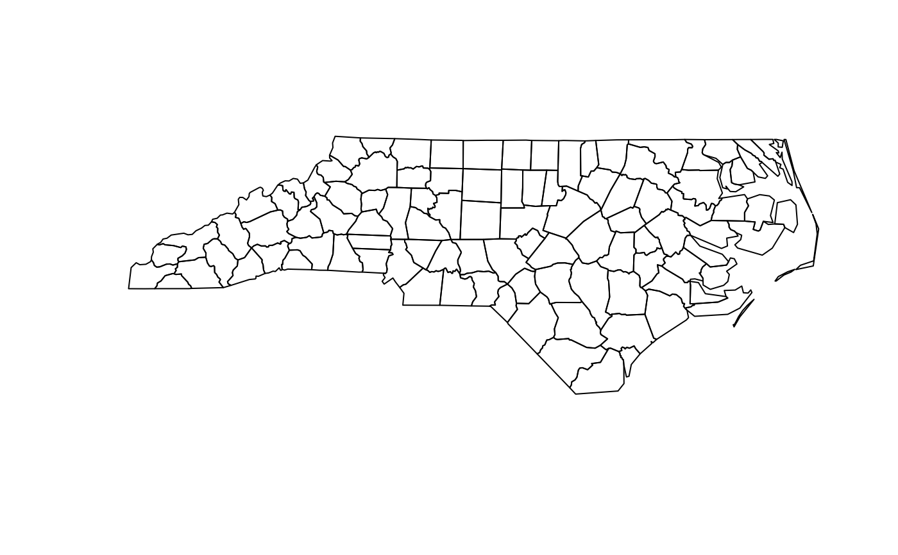

Create Grid of Points Within Shapefile
create_grid.RdGenerates a grid of points within a given shapefile. The grid points are created based on a specified spatial resolution.
Arguments
- shp
An object of class 'sf' representing the shapefile within which the grid of points will be created.
- spat_res
Numeric value specifying the spatial resolution in kilometers for the grid.
- grid_crs
Coordinate reference system for the grid. If NULL, the CRS of 'shp' is used. The shapefile 'shp' will be transformed to this CRS if specified.
Details
This function creates a grid of points within the boundaries of the provided shapefile ('shp'). The grid points are generated using the specified spatial resolution ('spat_res'). If a coordinate reference system ('grid_crs') is provided, the shapefile is transformed to this CRS before creating the grid.
Examples
library(sf)
# Example shapefile data
nc <- st_read(system.file("shape/nc.shp", package="sf"))
#> Reading layer `nc' from data source
#> `/home/runner/work/_temp/Library/sf/shape/nc.shp' using driver `ESRI Shapefile'
#> Simple feature collection with 100 features and 14 fields
#> Geometry type: MULTIPOLYGON
#> Dimension: XY
#> Bounding box: xmin: -84.32385 ymin: 33.88199 xmax: -75.45698 ymax: 36.58965
#> Geodetic CRS: NAD27
# Create grid with 10 km spatial resolution
grid <- create_grid(nc, spat_res = 10)
#> Warning: bounding box has potentially an invalid value range for longlat data
#> Warning: bounding box has potentially an invalid value range for longlat data
# Plot the grid
plot(st_geometry(nc))

plot(grid, add = TRUE, col = 'red')